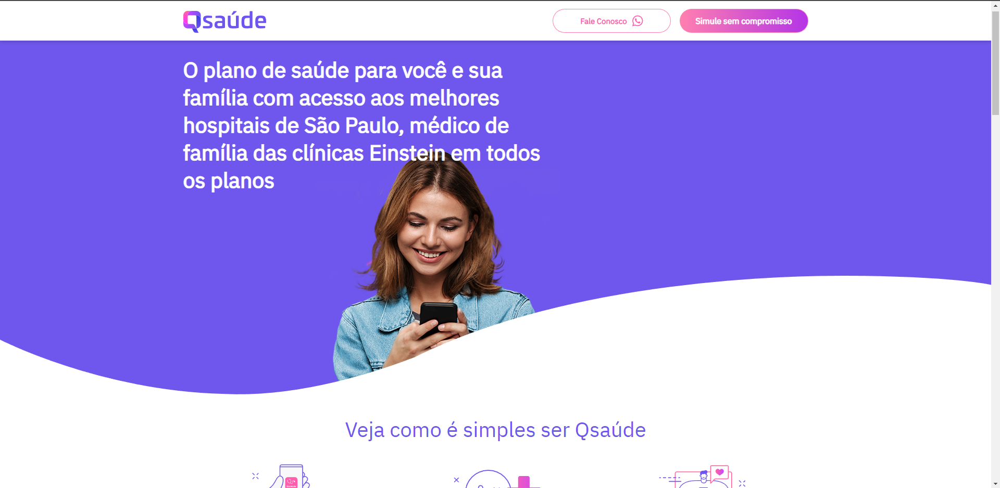
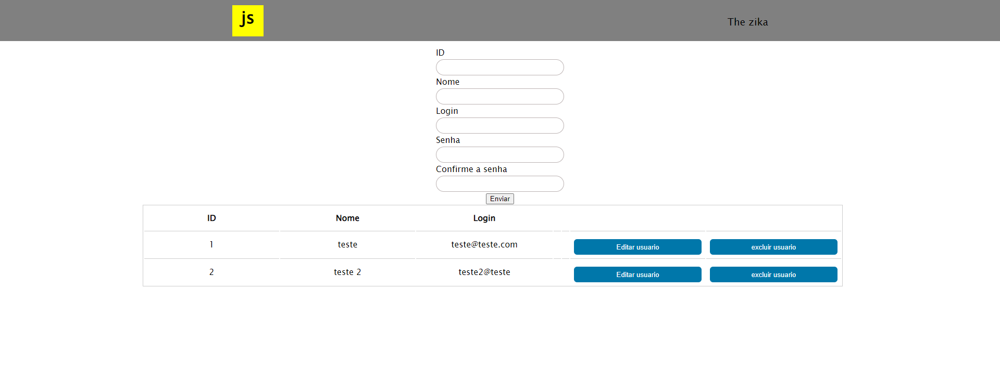

Projetos
-
Projeto Qsaude
Neste projeto recriei o layout do site Qsaude, ultilizando apenas Html e CSS
 Link do repositório Github junho de 2022 -
Projeto Tela de cadastro
Neste projeto criei uma tela de cadastro com opções de criar, editar e excluir usuário, e os dados sãp guardados no localStorage, ultilizando Html, CSS e JS
 Link do repositório Github junho de 2022 -
Projeto conversores
Neste projeto criei um conversor de moeda de dólar para real e de real para libra egípcia, porém ele tabém te retorna o valor em bitcoins, e como desafio criei um conversor que te diz quanto tempo você levara ao seu destino na velocidade da luz e um conversor de graus celsius para fahrenheit, projeto feito em uma imersão JS criada pela Alura
 Link do repositório Github
junho de 2022
Link do repositório Github
junho de 2022
-
Tabela de Classificação
Neste projeto foi criado uma tabela de classificação que computa vitória, derrota e empate, na viória o player ganha 3 pontos e é somando uma vitoria na lista do player, no empate ele ganha 1 ponto e é somado um empate na tabela, e na derrota o player não ganha ponto e é somado uma derrota na tabela.É possivel reeiniciar a contagem e adicionar os novos playes
 Link do repositório Github
junho de 2022
Link do repositório Github
junho de 2022